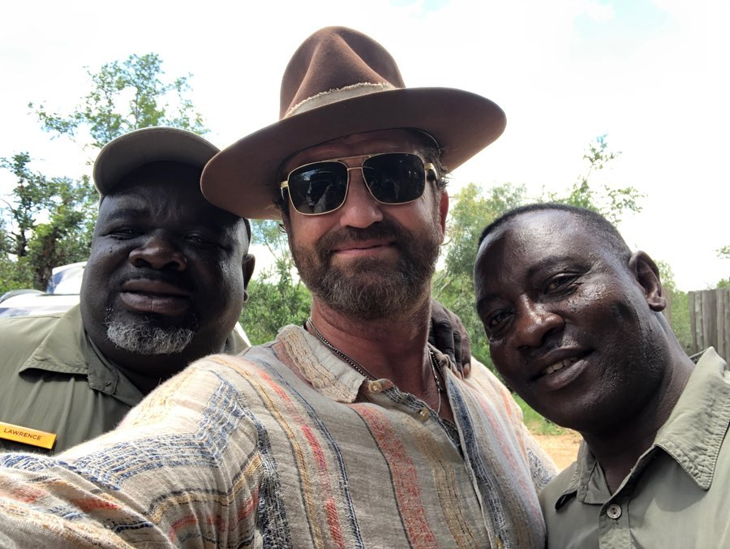
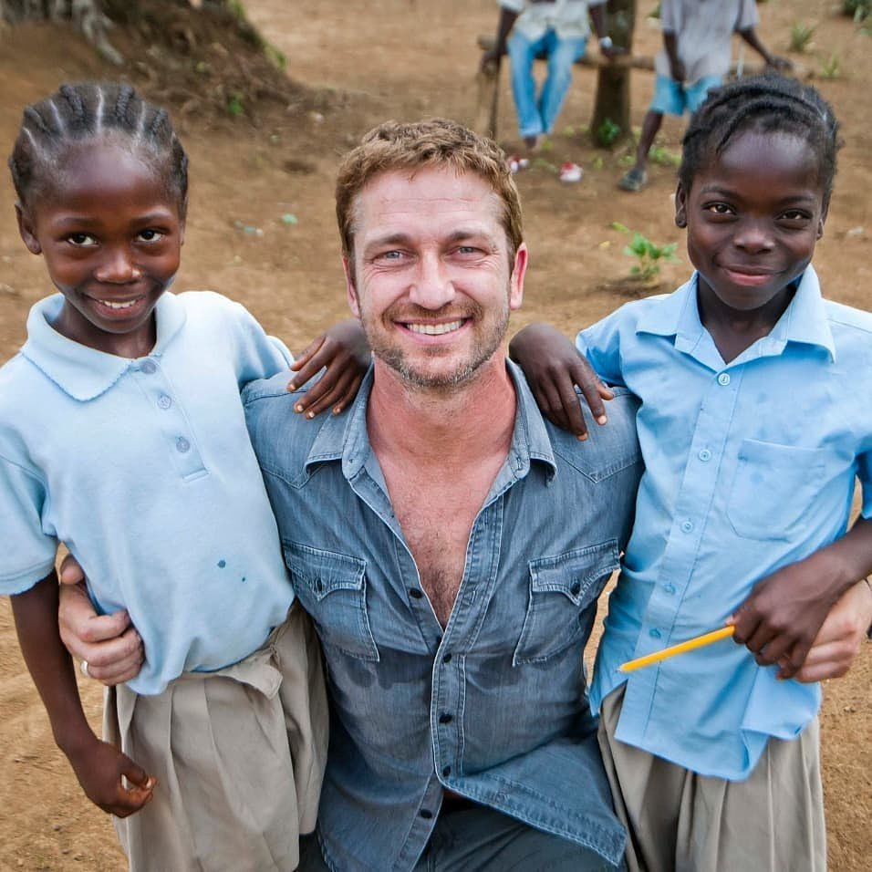
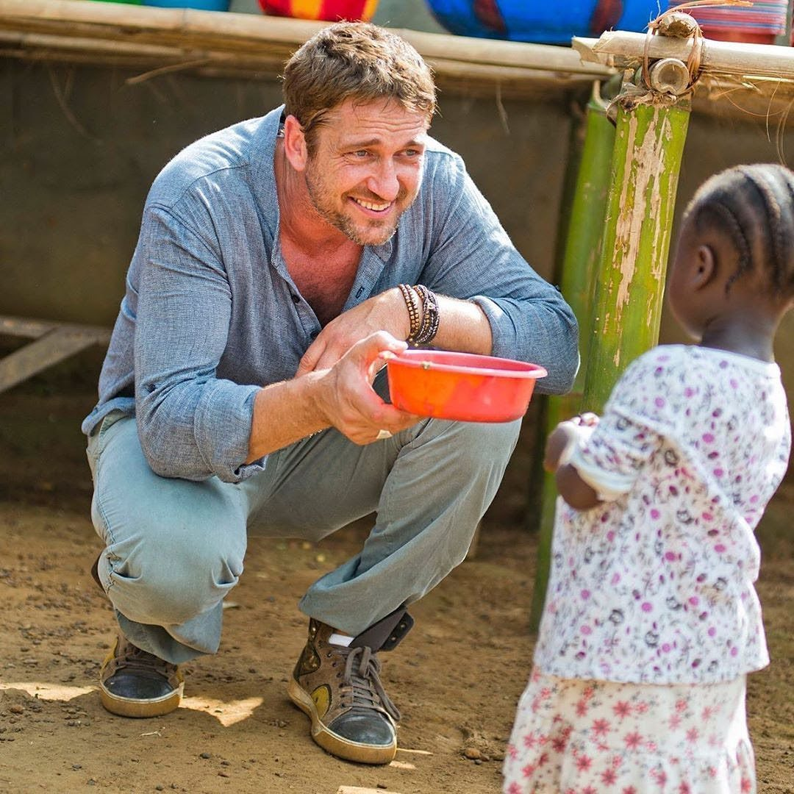

With the children

Community Visit

Local Support

Hands on Work

Giving Back
Beyond the screen, Gerard Butler has dedicated significant time and resources to humanitarian causes around the world — from crisis relief efforts to hands-on visits with children in Africa. His charitable work is a testament to the man behind the legend.
Gerard Butler has made multiple personal trips to Africa, working alongside aid organizations to deliver food, supplies, and — most importantly — hope to children in some of the continent's most underserved communities. He visits schools, holds children, plays with them in the dirt, and sits with families. No entourage, no publicist — just a man choosing to show up.
Candid, unscripted, real — Gerard Butler among the people he fights for.



Gerard has been a long-standing supporter of Direct Relief, which provides medical aid and humanitarian assistance in disaster zones across Africa and beyond.
Advocating for children's rights and welfare, Butler has actively fundraised and attended events supporting the Children's Defense Fund over many years.
Using his platform to encourage civic participation and youth engagement in social causes across America and internationally.
Following the devastating 2010 Haiti earthquake, Butler was among the first Hollywood voices to rally support and organize fundraising relief missions.
Hands-on visits to African schools to bring supplies, meals, and — most importantly — personal connection and encouragement to students.
Inspired by his role as Sam Childers, Butler has supported the real-life Angel's Children's Home in South Sudan — an orphanage saving children from conflict zones.